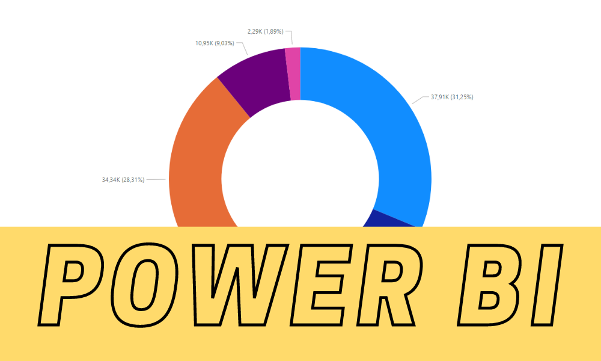
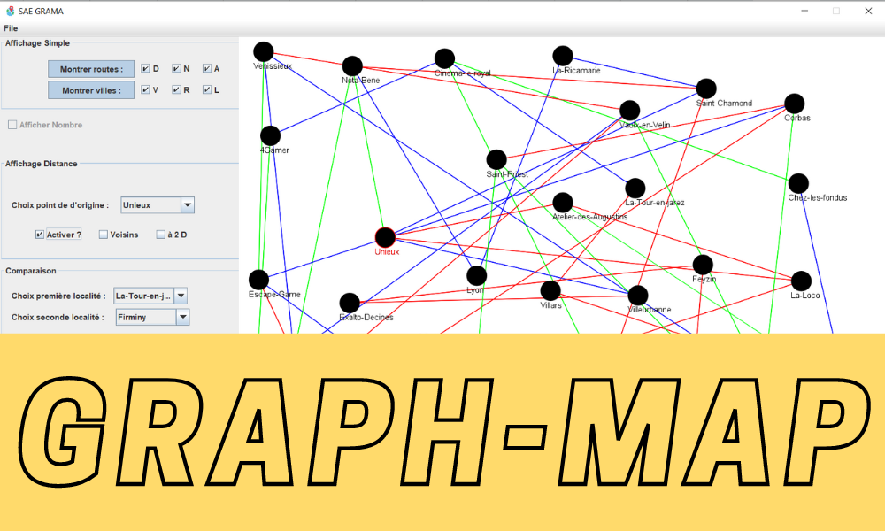

À mon Propos
Actuellement en deuxième année de BUT Informatique à l'UCBL LYON 1, je me destine à des métiers de l'Informatique centrés sur le Data. Je suis aussi actif dans le monde de l'associatif, Membre Impliqué du BDE Info 22/23 de mon Université et Kapseur de l'AFEV, j'ai pu rencontrer de nombreuses personnes issues de milieux vraiment différents.
Intéréssé par les Arts visuels, je fais de nombreuses sorties culturelles ainsi que des projets personnels tels que les 50H de Grenoble qui est un concours de court-métrage ou encore la Nuit de Tim Burton qui était un évènement à Lyon en la présence du réalisateur.
Projets
-

Power BI
Gérer des données de l'information :
Visualiser des données et effectuer un rapport d'analyse oral sous Power BI. L'analyse s'est faite sur une vente de vélos dans le monde, en fonction de type de vélo, de pays, de genres et ages des clients... -

Graph-Map
C'etait une très bonne expérience socio-professionnelle mais vs savez je ne pense pas qu'il y ait de bonnes ou de mauvaises situations, je pense que c'est avant tout des rencontres. Des gens qui m'ont tendu la main, une moment où je ne pouvais pas, j'était seul chez moi.
-

Simulation de Feu de Forêt
Petit projet dans le cadre d'un entretien technique, le but est de simuler un feu de forêt en fonction de différents paramètres
-
Power BI
Gérer des données de l'information :
Visualiser des données et effectuer un rapport d'analyse oral sous Power BI d'une vente de vélos dans le monde.
Compétences
-

Réaliser
RNCP35475BC01 - Réaliser un développement d’application
Réaliser un développement d'application
Développer : c'est créer, concevoir, coder, tester et intégrer une solution informatique pour un client En respectant les besoins du client , en appliquant les principes algorithmiques. En veillant à la qualité du code et à sa documentation, en choisissant les ressources techniques appropriées. Implémenter des conceptions simples. C'est faire des essais et évaluer leurs résultats en regard des spécifications. C'est développer des interfaces utilisateur
Partir des exigences et aller jusqu'à une application complète
Élaborer et implémenter les spécifications fonctionnelles et non fonctionnelles à partir des exigences. Appliquer des principes d'accessibilité et d'ergonomie. Adopter de bonnes pratiques de conception et de programmation Vérifier et valider la qualité de l'application par les tests
Adapter des applications différents supports (embarqué, web, mobile, ...)
Choisir et implémenter les architectures adaptées. Faire évoluer une application existante. Intégrer des solutions dans un environnement de production -

Optimiser
RNCP35475BC02 - Optimiser des applications informatiques
Optimiser des applications
Pour optimiser des applications, il est nécessaire de comprendre les algorithmes et les structures de données utilisés dans le programme. Il faut également prendre en compte le temps d'exécution, la mémoire utilisée et la consommation des ressources.
Construire, Sélectionner, Analyser et optimiser
Construire et sélectionner un algorithme optimisé consiste à créer un algorithme qui résoudra de manière efficace un problème. Étudier les performances d'un algorithme et mettre en œuvre des modifications pour améliorer celles-ci. Cela implique de comprendre le fonctionnement de l'algorithme et de connaître les différentes techniques d'optimisations disponibles. Il faudra prendre en compte : La taille des données, La mémoire disponible sur l'appareil -

Administrer
RNCP35475BC03 - Administrer des systèmes informatiques communicants
Administrer des systèmes informatiques communicants complexes
Cela consiste à gérer et maintenir en état de fonctionnement un système informatique connecté.
Installer, Configurer, Déployer
Créer et configurer un serveur web (Apache, XAMPP ou WAMPP).
Rendre le serveur opérationnel et le rendre disponible. Installation d'un poste pour le développement / Installation de services réseau. -

Concevoir
RNCP35475BC04 - Gérer des données de l’information
Concevoir, gérer et exploiter des bases de données
Gérer des données de l'information consiste à organiser, stocker et protéger des données.
Créer optimiser et intégrer
Créer une base de données en fonction des besoins des clients.
Optimiser une base de données et l'utiliser dans une application.
Intégrer une base de données dans une application. Exploiter les données grâce a Power BI. -

Gestion de Projet
RNCP35475BC05 - Conduire un projet
Gérer un projet informatique
Planifier, organiser et diriger l'exécution d'un projet informatique afin de respecter les contraintes suivantes : Délais, Budget, Objectifs
Identifier les besoins et suivre un projet
Identifier les besoins du client et les formuler sous forme d'un cahier des charges.
Suivre un projet tout au long de sa réalisation en respectant le cahier de charges. -

Collaborer
RNCP35475BC06 - Travailler dans une équipe informatique
Collaborer au sein d'une équipe informatique
Savoir travailler en équipe. Identifier ses aptitudes pour travailler dans une équipe. Situer les rôles et leurs missions au sein d'une équipe informatique. Manager
Gérer une équipe lors d'un projet. Respecter les contraintes du projet tout en répartissant les tâches en fonction des capacités de chacun.